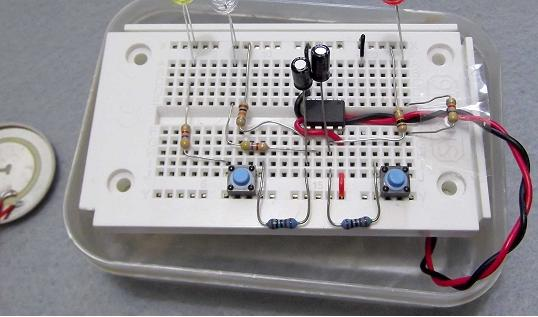
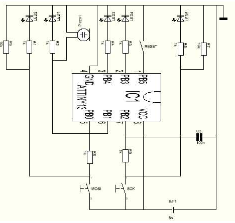
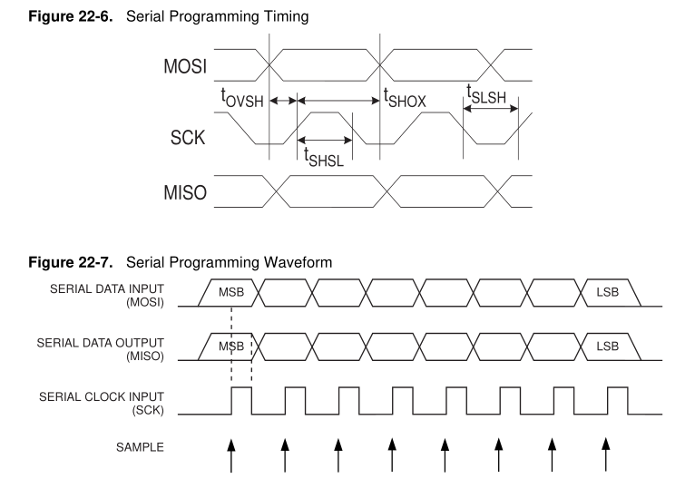

I have several microcontrollers: an Arduino Duemilanove with an ATMega328, a couple of Blue Pills (one with an STM32 and one with a CKS32; see notes on STM32duino), two or three ATMega8s, 18 surface-mount ATTiny45s, 19 DIP ATTiny45s, two loose ATMega328s, 16 ATTiny2313s, an Arduino Nano (or is that a Teensy?), two Raspberry Pi Zeros, a Raspberry Pi 2 Model B 1.1 from 2014, and a Raspberry Pi from 2012 which I think is a Pi 1 B. 66 computers in all.
But right now the Duemilanove is the only one I have successfully programmed!
It's apparently straightforward to rig up Arduino to program an ATTiny45; you use the ArduinoISP sketch, wire up the ATTiny45 pin 1 (/reset) to Arduino pin 10, ATTiny45 pin 5 (MOSI) to Arduino pin 11, ATTiny45 pin 6 (MISO) to Arduino pin 12, and ATTiny45 pin 7 (SCK) to Arduino pin 13, and of course VCC and ground on pins 8 and 4, and then I guess avrdude can program it. There's an updated Arduino support library for Arduino 1.6 at https://raw.githubusercontent.com/damellis/attiny/ide-1.6.x-boards-manager/package_damellis_attiny_index.json, but probably just avr-gcc is fine most of the time. And there's an Arduino Create Hub page about this too. For ArduinoISP you probably want to hook up a cap to stop the Arduino from resetting.
Luna also gave me a PC with a parallel port, which might work with avrdude without ArduinoISP.
The ATTiny45 is not super powerful and has only 8 pins, but it does have an ADC and support multiplexing the analog comparator between pins.
The ATTiny2313 is the first AVR I programmed actually, using a parallel port, using Limor Fried's minipov2. It doesn't have an ADC at all, and its analog comparator isn't multiplexable between pins, but it has a somewhat less cripplingly small number of pins: 17 GPIOs instead of 6, 18 if you push it.
Arduino support is available at http://drazzy.com/package_drazzy.com_index.json. You hook up pin 1 (reset) to pin 10 of the Arduino, just as with the ATTiny45, and similarly pins 17, 18, and 19 (DI, DO, SCK) to pins 11, 12, and 13 of the Arduino. (I'm guessing they're "DI" and "DO" because the 2313 doesn't have SPI hardware.) TinyDebugSerial is supposed to make the serial port work.
This last link also gives a somewhat mangled command line for using ArduinoISP or something called "TinyISP" directly from avrdude.
Avrdude, when using ArduinoISP
avrdude -P COM20 -b 19200 -p t2313 -c avrispUpload using TinyISP
-p attiny2313 -c stk500v1 -P COM3 -b19200 -Uflash:w:Blink.hex:i
The best documentation for avrdude is still Limor Fried's.
There are a few different options for serial data on these tiny machines actually. This is very useful because it provides a way to debug, and also to use these devices as sensors before having a screen to display the results on, and also a way to use them for continuous data acquisition or later download from EEPROM data. And because it's reasonable to use a crystal on it, you can meet RS-232 timing requirements!
Heinz D. wrote an ATTiny13 tutorial in German which starts out by attaching switches to the reset, SCK, and MOSI lines of an ATTiny13 and programming it with them.

Here's Heinz D.'s schematic:

The ATTiny2313 datasheet has "serial programming timing" on p. 205:

This doesn't really explain how you get into serial programming mode, or what data gets input or output, though. It does mention the protocol a bit on p. 29: "If the RSTDISBL fuse is programmed, this start-up time will be increased to 14CK + 4 ms to ensure programming mode can be entered." So apparently you program it during reset? Surely I'll eventually find the full procedure.